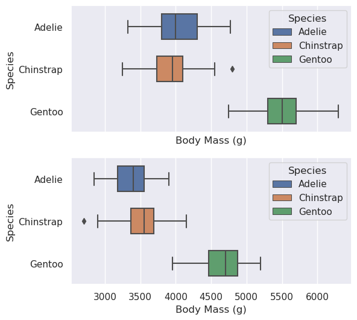

#import the necessary libraries
import pandas as pd
from matplotlib import pyplot as plt
import seaborn as snsHow to Create an Interesting Data Visualization
This tutorial will show and explain the code to analyze a dataframe through the creation of a visualization. It will use the Palmer’s Penguin dataset, but these strategies can be expanded for other dataframes and visualization choices.
Preliminary Setup
In order to create an interesting visualization of the Palmer Penguins data set, it is first necessary to import the data and necessary packages. For this specific visualization, I imported the pandas, matplotlib, and seaborn libraries. The pandas library will allow us to convert the data into a data fram that can be analyzed. Using matplotlib and seaborn, I can create graphs that will depict the chosen features and aspects of the graph.
#create a data frame using the data and pandas library
url = "https://raw.githubusercontent.com/pic16b-ucla/24W/main/datasets/palmer_penguins.csv"
penguins = pd.read_csv(url)penguins.head()| studyName | Sample Number | Species | Region | Island | Stage | Individual ID | Clutch Completion | Date Egg | Culmen Length (mm) | Culmen Depth (mm) | Flipper Length (mm) | Body Mass (g) | Sex | Delta 15 N (o/oo) | Delta 13 C (o/oo) | Comments | |
|---|---|---|---|---|---|---|---|---|---|---|---|---|---|---|---|---|---|
| 0 | PAL0708 | 1 | Adelie Penguin (Pygoscelis adeliae) | Anvers | Torgersen | Adult, 1 Egg Stage | N1A1 | Yes | 11/11/07 | 39.1 | 18.7 | 181.0 | 3750.0 | MALE | NaN | NaN | Not enough blood for isotopes. |
| 1 | PAL0708 | 2 | Adelie Penguin (Pygoscelis adeliae) | Anvers | Torgersen | Adult, 1 Egg Stage | N1A2 | Yes | 11/11/07 | 39.5 | 17.4 | 186.0 | 3800.0 | FEMALE | 8.94956 | -24.69454 | NaN |
| 2 | PAL0708 | 3 | Adelie Penguin (Pygoscelis adeliae) | Anvers | Torgersen | Adult, 1 Egg Stage | N2A1 | Yes | 11/16/07 | 40.3 | 18.0 | 195.0 | 3250.0 | FEMALE | 8.36821 | -25.33302 | NaN |
| 3 | PAL0708 | 4 | Adelie Penguin (Pygoscelis adeliae) | Anvers | Torgersen | Adult, 1 Egg Stage | N2A2 | Yes | 11/16/07 | NaN | NaN | NaN | NaN | NaN | NaN | NaN | Adult not sampled. |
| 4 | PAL0708 | 5 | Adelie Penguin (Pygoscelis adeliae) | Anvers | Torgersen | Adult, 1 Egg Stage | N3A1 | Yes | 11/16/07 | 36.7 | 19.3 | 193.0 | 3450.0 | FEMALE | 8.76651 | -25.32426 | NaN |
Data Selection
The next step to create these visualizations is to decide which features of the dataset that you would want to illustration. I personally chose to see how the body mass of penguins differs depending on their sex for each species. Because I now know the features I want to analyze, I can isolate each of those columns for future steps.
Data Cleaning
The next step in the process is cleaning the relevant data by removing any penguins subjects with any missing measurements. Some penguins for example did not have their sex specified within the data frame, so removing the rows of each penguin without their sex being either male or female ensures that the data is complete. The same conditions applied for penguins without an integer to represent their body mass in grams. This cleanup removed 11 of the penguins from the visualization but ensured that the ones which were represented contained all the necessary information. I also changed the species labels to just include the species name rather than the excessive “Species” ending in the title for better readability.
#remove any values from the data frame where the sex is not male or female
df = penguins[penguins["Sex"].isin(["MALE", "FEMALE"])].copy()
#remove any values from the data frame where body mass is not an integer to represent grams
df = df[df["Body Mass (g)"].notnull().copy()]
#shorten the species names to avoid redundancy
df["Species"] = df["Species"].str.split().str[0]Creating The Graphs
The next step is deciding how to represent your chosen data. I personally wanted to study the range of the body mass for each sex and species of the penguins and therefore decided to use boxplots that were vertically stacked to see how the ranged differed. Using the cleaned data, I split the data for the male and females. Then, creating a figure with two subplots stacked on top each other and sharing their x-axis of body mass in grams, I was able to plot the data. Setting the y-axis to be the species of the penguins and the titles of each of the subplots to represent each of the sexes, the visualization allowed us to see how the body masses of penguins ranged for each species considering their sex.
#create the figure with two vertical subplots that share their x-axis
fig, ax = plt.subplots(2, 1, figsize=(6, 6), sharex=True)
#divide the data for the male graph by selecting penguins of that sex
male_data = df[df["Sex"] == "MALE"]
#create the boxplot using the color palette, data, and proper x-axis and y-axis data
sns.boxplot(data=male_data, x="Body Mass (g)", y="Species", hue="Species", width=0.6, dodge = False, ax=ax[0])
#divide the data for the female graph by selecting penguins of that sex
female_data = df[df["Sex"] == "FEMALE"]
#create the boxplot using the color palette, data, and proper x-axis and y-axis data
sns.boxplot(data=female_data, x="Body Mass (g)", y="Species", hue="Species", width=0.6, dodge = False, ax=ax[1])
#display graph
plt.show()
Extra Graph Features
Once the graphs are created, extra aesthetic features can be added to improve the readability of the graphs. One such change was creating palette with three colors (each representing one of the species) using the seaborn library and applying the changes to each of the boxplots. The next change was setting the theme of the seaborn graphs to a standard whitegrid. This allowed for the creation of gridlines and clear borders to visualize the differences between the six boxplots better. Finally, adding labels for the axes and and titles for each of the subplots in addition to the legends representing the species colors improved the readability of the graph overall.
#create the color palette for the graphs using seaborn library color schemes
palette = sns.color_palette("flare", n_colors=3)
#set the the theme and font scale of the graphs using the seaborn library
sns.set_theme(style='whitegrid', font_scale=1.0)
#create the figure with two vertical subplots that share their x-axis
fig, ax = plt.subplots(2, 1, figsize=(6, 6), sharex=True)
#divide the data for the male graph by selecting penguins of that sex
male_data = df[df["Sex"] == "MALE"]
#create the boxplot using the color palette, data, and proper x-axis and y-axis data
sns.boxplot(data=male_data, x="Body Mass (g)", y="Species", hue="Species",palette=palette, width=0.6, dodge = False, ax=ax[0])
#set the labels and titles of the graphs
ax[0].set(xlabel="", title="Male", ylabel="Species")
#create the legend
ax[0].legend(title="Species")
#divide the data for the female graph by selecting penguins of that sex
female_data = df[df["Sex"] == "FEMALE"]
#create the boxplot using the color palette, data, and proper x-axis and y-axis data
sns.boxplot(data=female_data, x="Body Mass (g)", y="Species", hue="Species",palette=palette, width=0.6, dodge = False, ax=ax[1])
#set the labels and titles of the graphs
ax[1].set(ylabel="Species", xlabel = "Body Mass (g)", title="Female")
#format the layout of the graph and display
plt.tight_layout()
plt.show()
Final Notes
Overall, these are the basic steps to create an interesting data visualization of the Palmer Penguins data set. There are many ways to represent the data of your choice. Using the matplotlib and seaborn libraries, you can choose from a variety of graphs that will allow you to interpret your data. Although I chose to represent one feature considering two variables, there are a multitude of options to choose from. In the future, using these steps will allow one to create diverse and interesting data visualizations!
Final Code
#import the necessary libraries
import pandas as pd
from matplotlib import pyplot as plt
import seaborn as sns
#create a data frame using the data and pandas library
url = "https://raw.githubusercontent.com/pic16b-ucla/24W/main/datasets/palmer_penguins.csv"
penguins = pd.read_csv(url)
#remove any values from the data frame where the sex is not male or female
df = penguins[penguins["Sex"].isin(["MALE", "FEMALE"])].copy()
#remove any values from the data frame where body mass is not an integer to represent grams
df = df[df["Body Mass (g)"].notnull().copy()]
#shorten the species names to avoid redundancy
df["Species"] = df["Species"].str.split().str[0]
#create the color palette for the graphs using seaborn library color schemes
palette = sns.color_palette("flare", n_colors=3)
#set the the theme and font scale of the graphs using the seaborn library
sns.set_theme(style='whitegrid', font_scale=1.0)
#create the figure with two vertical subplots that share their x-axis
fig, ax = plt.subplots(2, 1, figsize=(6, 6), sharex=True)
#divide the data for the male graph by selecting penguins of that sex
male_data = df[df["Sex"] == "MALE"]
#create the boxplot using the color palette, data, and proper x-axis and y-axis data
sns.boxplot(data=male_data, x="Body Mass (g)", y="Species", hue="Species",palette=palette, width=0.6, dodge = False, ax=ax[0])
#set the labels and titles of the graphs
ax[0].set(xlabel="", title="Male", ylabel="Species")
#create the legend
ax[0].legend(title="Species")
#divide the data for the female graph by selecting penguins of that sex
female_data = df[df["Sex"] == "FEMALE"]
#create the boxplot using the color palette, data, and proper x-axis and y-axis data
sns.boxplot(data=female_data, x="Body Mass (g)", y="Species", hue="Species",palette=palette, width=0.6, dodge = False, ax=ax[1])
#set the labels and titles of the graphs
ax[1].set(ylabel="Species", xlabel = "Body Mass (g)", title="Female")
#format the layout of the graph and display
plt.tight_layout()
plt.show()